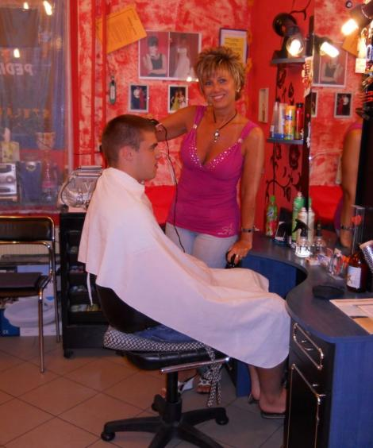

Lőcsei Szalon
Fodrászat
Andi • női, férfi és gyermek frizurák
Fodrászat • Andi
Modern, egyénre szabott hajvágás és hajápolás családias környezetben.
Női, férfi és gyermek hajvágásHajfestés növényi alapanyagú hajfestékekkelFóliás és sapkás melírTartóshullám és spiráldauerAlkalmi és esküvői frizurákSzárítás, berakás és lapvasalásHaj- és fejbőrápolási tanácsadásSamponos és hajszeszes fejmasszázs
Andi: +36 20 435 9995Galéria
Andi munkái
Andi munka közben a Lőcsei Szalonban.
